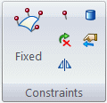
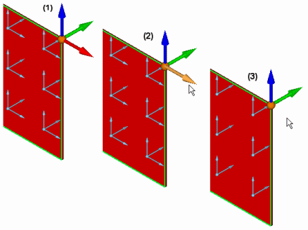
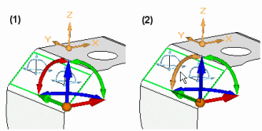
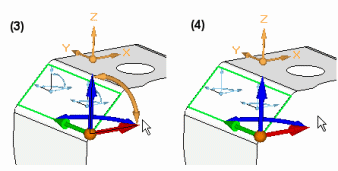
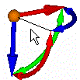

Define a constraint
-
On the ribbon, choose one of the following constraint types from the Simulation tab→Constraints group:

For specific information about each type of constraint, click the links below.
Note:-
Cylindrical and Sliding Along Surface constraint types are not available for frame analysis.
-
For a thermal study, use the commands in the Thermal Loads group as thermal constraints.
-
-
Click one or more geometric elements where you want to apply the constraint, and then click Accept.
-
(For a Fixed, Pinned, No Rotation, or User-Defined constraint) On the Constraints command bar, from the Type list, first select the type of entity to which the constraint will be applied—Face (including face set), Edge, Point, Feature, Node or Curve—and then click the elements.
-
(For a Sliding Along Surface or Cylindrical constraint) Click the planar faces or cylinders, as instructed on PromptBar.
-
If you are adding a Cylindrical or User-Defined constraint, specify the degrees of freedom (DOF) to restrict or allow.
-
(Cylindrical constraint) Set or clear the options on the Constraints command bar to add or remove DOF. For examples, see Cylindrical constraints.
-
(User-defined constraint) Do the following:
-
On the Constraints command bar, from the Coordinate System list
 , select a user-defined coordinate system or the base coordinate system (the default
option).
, select a user-defined coordinate system or the base coordinate system (the default
option). -
Specify the DOF to remove by clicking the triad direction arrows. At least one DOF is required.
Example:To remove 1 translational DOF on a solid part:

Example:To remove 2 rotational DOF on a thin-body part:


To add a DOF that you removed, click the wireframe element on the triad:

-
-
-
-
To finish adding the constraint, do one of the following:
-
Press the Enter key.
-
Right-click.
-
-
Alternatively, you can right-click the Constraints group in the Simulation pane, select Create New Constraint, and choose the constraint from the list.
-
You can use the Select tool, QuickPick, fence select, or the Selection Manager to select model geometry.
-
Before you finish the command, you can make adjustments on the Constraints command bar to change constraint display color and label display.
How do I
Activity: Apply a fixed constraintActivity: Apply pinned and no rotation constraints
Activity: Apply a sliding along surface constraint
Activity: Apply a user defined constraint
Edit a constraint
Learn more
Creating and using constraintsConstraints
Constraint symbols
Constraint labels